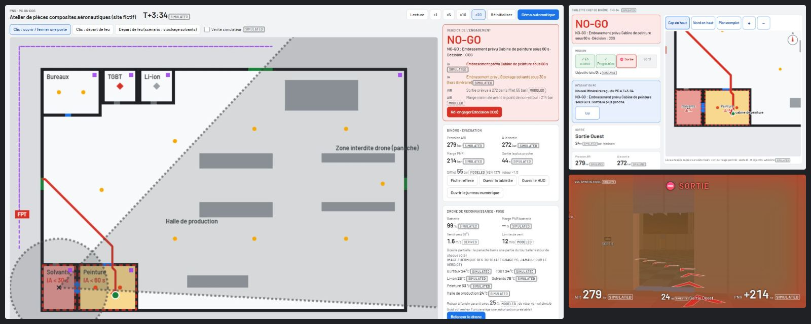
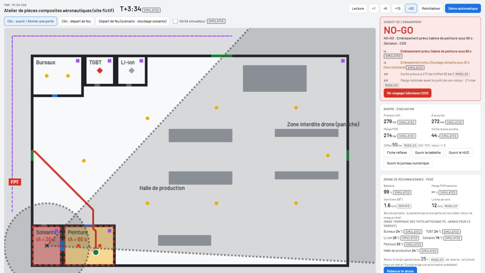
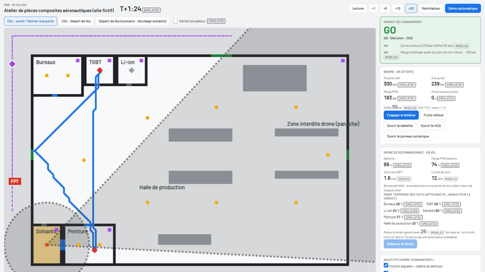
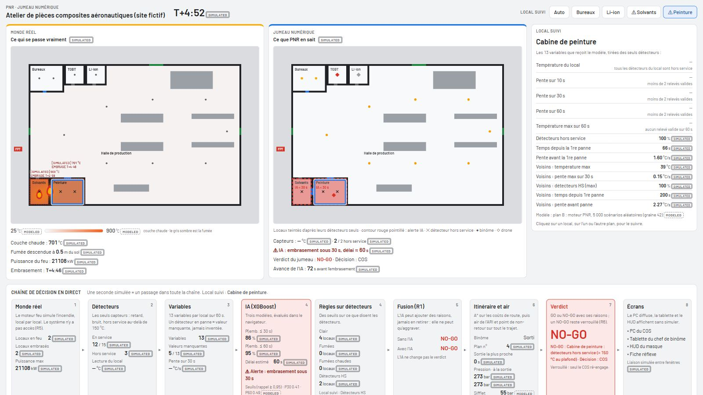

Le binôme peut-il encore ressortir ? PNR répond à chaque seconde.

millions de dinars (MDT), assurance
× 3,3 en quatre ans.
« J'engage ou je retire ? » Une vue d'ensemble, des raisons claires, un journal de ses décisions.
« Par où sortir ? Combien d'air au retour ? » Un itinéraire, un point de non-retour, des alertes.
« Je continue ou je sors ? » Une alerte lisible en moins d'une seconde : icône, mot, couleur.

Héritage : moteur de route et logique de point de non-retour repris de Martian Map (NASA Space Apps Challenge 2026), O₂ du scaphandre → air de l'ARI.
bruités, en panne au-delà de 150 °C
tour du site, hors du panache
observations horodatées
règles + IA + drone : ne peut qu'aggraver (GO → NO-GO, jamais l'inverse)
A* sur le plan, temps de sortie, point de non-retour de l'ARI
GO / NO-GO verrouillé ; seul le COS ré-engage
PC, tablette, HUD du masque, jumeau numérique, fiche réflexe

Tour à 30 m depuis l'engin ; panache évité selon le vent Open-Meteo DERIVED ; PNR batterie : retour garanti avec 25 % de réserve ; vol refusé au-delà de 12 m/s.
9 min, 1,5 m/s, 50 °C max MODELED ; n'ouvre jamais une porte ; un local non visité reste INCONNU, jamais « sûr ».
Vol simulé : en Tunisie, tout vol réel exige une autorisation préalable. Inspiration : NASA ACERO (gestion des drones sur incendie).
Sur le réel, l'IA n'a manqué aucun embrasement, mais elle alerte trop souvent. Entraînée sur notre simulateur, elle doit être réentraînée sur des mesures réelles (NIST P-Flash, relevés d'exercices).

Le drone d'intérieur découvre un rack effondré absent du plan ; la répétition propose le contournement et l'heure de demi-tour ; le COS valide le plan.
Air, vitesses, consignes : revus avec la Protection civile.
NIST P-Flash, relevés d'exercices réels ; réduire les fausses alertes.
Capteurs et HUD, du banc à l'exercice de formation.
Une unité, un site industriel, drone sous autorisation.
Mesures du pilote, cahier des charges, autres sites.
Hypothèse de change : 1 € = 3,4 TND. Prix revendeurs relevés le 22/11/2026, ordre de grandeur.
Coût par site faible ; les indemnités d'incendie ont triplé en quatre ans : industriels et assureurs ont intérêt à des interventions plus sûres.
Hypothèses d'air et de vitesse, consignes, seuils : chacun revu et signé par la Protection civile.
Une unité et un site : exercices, puis interventions en parallèle des pratiques actuelles.
Autres unités, zones industrielles, centres de formation.
Tablette durcie, drone mutualisé par unité, affichage dans le masque.
Plans de site numérisés, relevés d'exercices pour réentraîner l'IA.
Deux jours par équipe ; la répétition sert d'outil d'entraînement.
Recalibrage semestriel du modèle, mise à jour des plans.
Un référent technique, journal des décisions pour le retour d'expérience.
Code, tests et documentation écrits avec l'aide d'un assistant IA (Claude Code), déclaré. Fork de Martian Map (NASA Space Apps 2026), crédité.